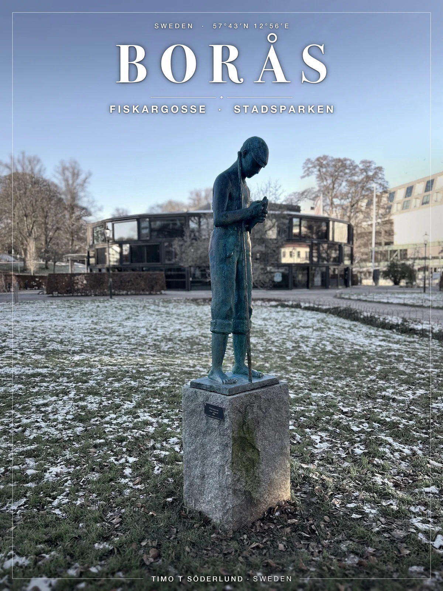

Fiskargosse · Stadsparken
Bronze Sculpture by Sven Lundqvist (1991) & Orangeriet by Gert Wingårdh (2015) · Borås, Sweden
English
Inaugurated in 1991 in central Stadsparken near Viskan in Borås, Sweden, Swedish sculptor Sven Lundqvist's (1918–2010) bronze sculpture Fiskargosse captures a quiet moment of concentration. Barefoot with rolled-up trousers and bent forward over his hands with his fishing rod atop a weathered granite plinth, the boy stands on a frost-dusted lawn directly in front of Orangeriet—the circular glass pavilion designed by architect Gert Wingårdh and inaugurated in 2015. Photographed by Timo T Söderlund for Borås Poster Project 2026.
Svenska
Invigd 1991 i centrala Stadsparken nära Viskan i Borås fångar skulptören Sven Lundqvists (1918–2010) bronsskulptur Fiskargosse ett stillsamt ögonblick av koncentration. Barfota i uppkavlade byxor och framåtböjd med sitt fiskespö på en mossbeklädd granitsockel står pojken på en frostig gräsmatta rakt framför Orangeriet — den cirkelrunda glaspaviljongen ritad av arkitekten Gert Wingårdh och invigd 2015. Fotograferad av Timo T Söderlund för Borås Poster Project 2026.
Photographer & Edition: Timo T Söderlund · Borås, Sweden (2026)